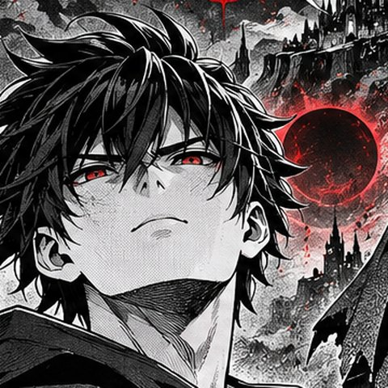
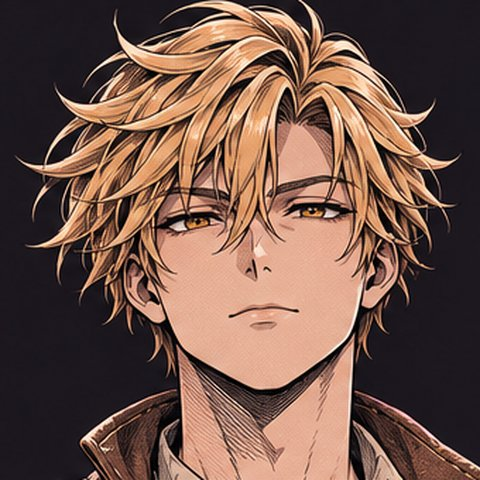
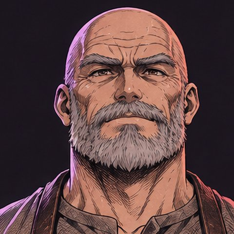
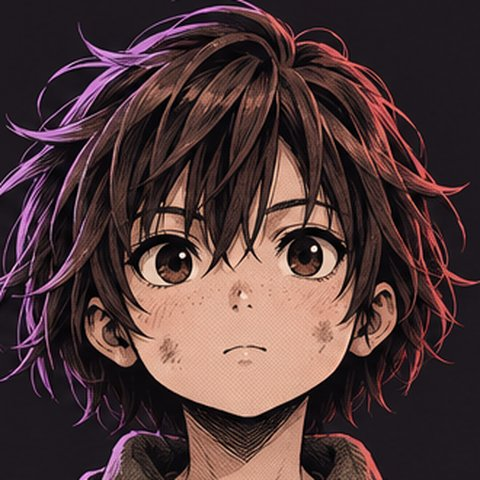
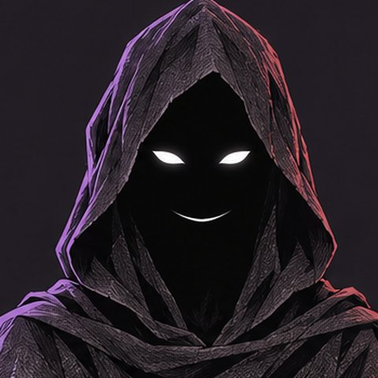

Kael Varyn
Aprendiz de ferreiro na Cidade Baixa, criado pelo mestre Bram. Impulsivo, teimoso, protege os mais fracos sem pensar. Há meses sonha com uma voz que chama seu nome.

Aprendiz de ferreiro na Cidade Baixa, criado pelo mestre Bram. Impulsivo, teimoso, protege os mais fracos sem pensar. Há meses sonha com uma voz que chama seu nome.

Maga da Ordem do Véu, enviada para encontrar a Chave. Calma, estratégica, leal. Esconde que perdeu a irmã para o Abismo.

Melhor amigo e rival de Kael, filho de um mercador. Carismático, provocador, ótimo com duas adagas. Esconde o medo com piadas.

A espadachim mais jovem da Guarda de Vel Aren. Determinada, espírito livre, coloca a justiça acima das ordens.

Ferreiro que criou Kael desde bebê. Rabugento e carinhoso. Sabe mais do que conta sobre a origem do garoto.

Menina órfã que vende pão na praça e segue Kael para todo lado.

Líder dos que querem abrir o Abismo. Figura encapuzada que observa Kael. Rosto sempre na sombra.